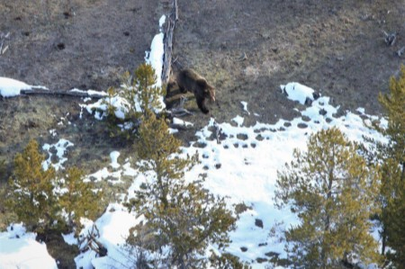

Preston, ID
weather update
Currently:
High:
Wind Chill:
Humidity:
Wind Speed:
Currently:
High:
Wind Chill:
Humidity:
Wind Speed:

Spring is beginning to stir and so are the bears.
Yellowstone National Park reported the first sighting of a grizzly bear this year on Saturday.
“The bear was observed from the air by biologists during a radio telemetry flight near Grand Prismatic Spring just one day before last year’s first sighting,” the park said in a news release.
The park said typically male grizzly bears emerge from hibernation in early March. Females with cubs emerge in April and early May. When the bears emerge, they often feed on winter-killed elk and bison.
“Sometimes, bears will react aggressively while feeding on carcasses,” the park said.
Starting Tuesday, the park issued restrictions in established bear management areas.
Areas such as the Firehole area, Mary Mountain Trail and Gneiss Creek have entrance restrictions through Memorial Day and beyond to reduce human-bear interactions.
Many of these areas have a high density of elk and bison carcasses, attracting bears. For specifics on bear management areas, go to tinyurl.com/pr-bear-closures.
With the exception of the road open year-round from Mammoth to Cook City, Montana, park roads are closed for spring plowing.
Bear spray has proven effective in deterring bears defending cubs and food sources. It can also reduce the number of bears killed by people in self-defense.
Soda Springs Joint School District 150: As a school district, we feel it is in the best interest of our community to close schools at this time.
Starting Monday, March 23, all Soda Springs School District Schools and buildings will be closed through April 2. There will be instructional curriculum available to students. After this scheduled break we will reevaluate the situation.
Sugar-Salem School District 322: Our plan for the foreseeable future is that we will cancel school attendance until further notice. We anticipate that this will be approximately three weeks, but we will keep everyone updated via email, text and our website.